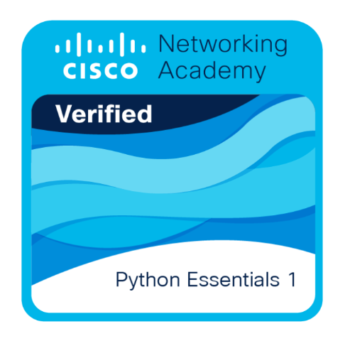
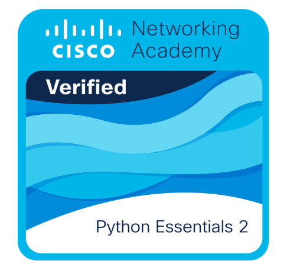
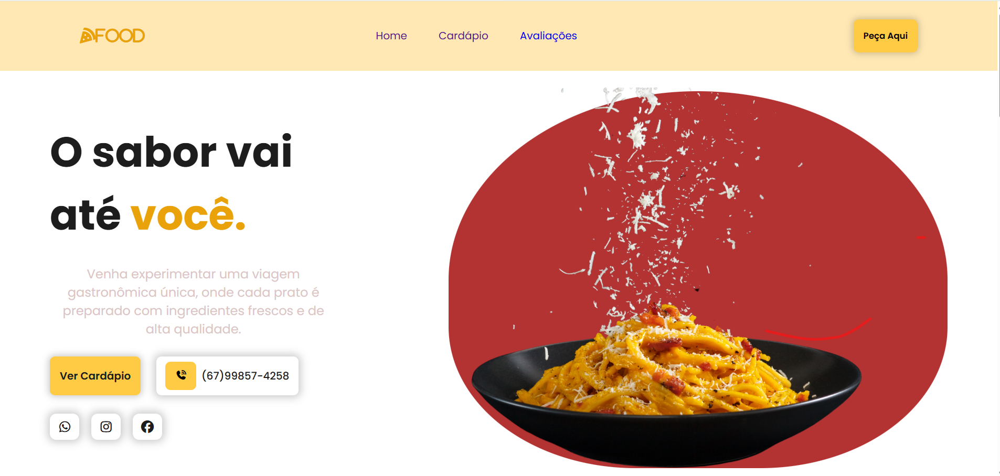

Olá sou Izadora Aparecida
Desenvolvedora Full Stack
Focada no desenvolvimento web, busco criar soluções digitais modernas, eficientes e alinhadas às necessidades reais dos usuários.
Focada no desenvolvimento web, busco criar soluções digitais modernas, eficientes e alinhadas às necessidades reais dos usuários.
Tenho 19 anos, sou de Campo Grande (MS) e atualmente estou cursando o 2º semestre de Ciência da Computação, além de realizar formação técnica em Desenvolvimento de Sistemas pelo Senac Hub Academy.
Estou aberta para troca de Networkings e para crescer como e aberto também para a construção de projetos como Desenvolvimento Web e Dashboards.


Concluí o curso Python Essentials 1, oferecido pela Cisco em parceria com o OpenEDG Python Institute, onde adquiri uma base sólida em lógica de programação e nos fundamentos da linguagem Python. Durante a formação, desenvolvi habilidades em sintaxe, estruturas de controle, variáveis e funções.

Concluí o curso Python Essentials 2, aprofundando meus conhecimentos em programação com Python. Durante a formação, trabalhei com conceitos intermediários como módulos, pacotes, tratamento de exceções, manipulação de arquivos e Programação Orientada a Objetos (POO), desenvolvendo aplicações mais estruturadas e organizadas.
Possuo habilidades em desenvolvimento web, com conhecimentos em HTML, CSS, JavaScript e Python, que me permitem criar interfaces modernas e aplicações funcionais. Também utilizo ferramentas como Figma, GitHub e VS Code no desenvolvimento dos meus projetos. Estou sempre em busca de aprender novas tecnologias e aprimorar meu raciocínio lógico para resolver problemas de forma eficiente.

Projeto desenvolvido da Lanchonete 544, teve como foco oferecer uma experiência digital atrativa e funcional. O site destaca o cardápio, facilita o contato e valoriza os produtos, proporcionando uma navegação prática e agradável por meio de um design moderno e intuitivo.